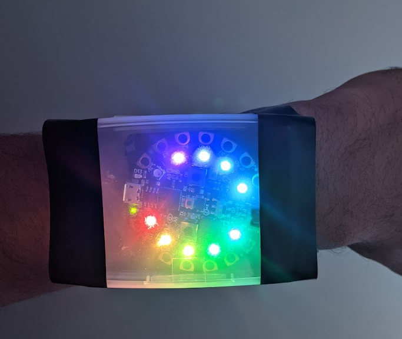

Wearable Step Counter - Github Repo↗
Wristwatch sized device which displays steps walked, to track physical activity. Calculates steps using accelerometer built into Adafruit microcontroller, programmed in Python.

Board with battery
The device uses a small battery pack of 2 AAA batteries that can fit behind the board. I found it was necessary to debounce the accelerometer signal to get an accurate reading, and testing was done to determine the ideal parameters for determining what will trigger a step.
Wearable configuration with LED output
I wasn't able to acquire a display output, so I made it work with the LEDs already built into the board. The amount of LEDs turned is equal to the amount of steps counted / 100, rounded to the nearest 100. Therefore the above image shows 900 steps walked out of a total of 1000.